Explore Bordeaux
A Brief History
Bordeaux prospered as a port shipping wine and goods from the Garonne estuary to northern Europe, with 18th-century quays and Place de la Bourse built during the Age of Enlightenment. Medieval gates, Saint-André Cathedral, and neoclassical theatres record English and French control. UNESCO-listed waterfront and surrounding châteaux illustrate southwestern France's mercantile and viticultural history.
Attractions Map
Top Sights & Activities
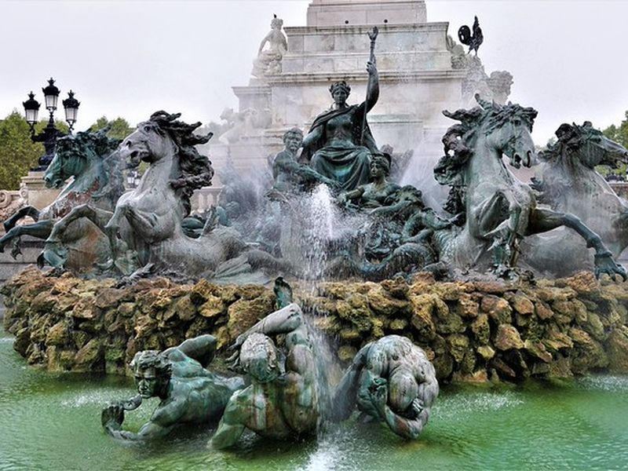
Monument aux Girondins
In the heart of Bordeaux's Triangle d'Or, surrounded by historic landmarks and elegant architecture, stands the Monument aux Girondins. This grand monument pays tribute to the Girondin revolutionaries with its towering column and intricate fountain featuring bronze sea horses. Nearby, the Esplanade des Quinconces offers a vibrant setting for various events, while the Place des Quinconces boasts as one of Europe's largest open squares.
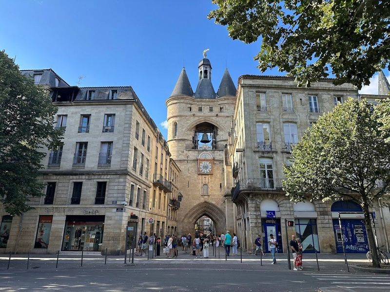
Grosse Cloche
Nestled in the heart of Bordeaux, Grosse Cloche, or "Big Bell," is a captivating historical landmark that dates back to the 15th century. This impressive bell and clock tower was originally part of the city's medieval fortifications and served as an alarm system for fires. Weighing an astonishing 7.75 tons, the bell rings on special occasions like Remembrance Day and Fete Nationale, echoing stories from centuries past.
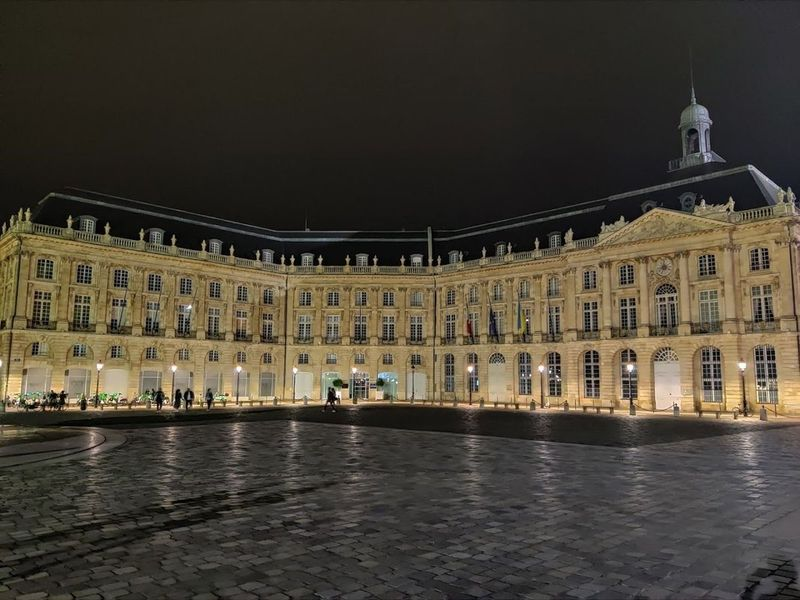
Place de la Bourse
When visiting Bordeaux, one of the spots is the Place de la Bourse. This 18th-century city square is surrounded by elegant architecture and features a grand fountain at its center. The Palais de la Bourse, with its Neoclassical-style facade adorned with columns and sculptures, is a notable building to explore.
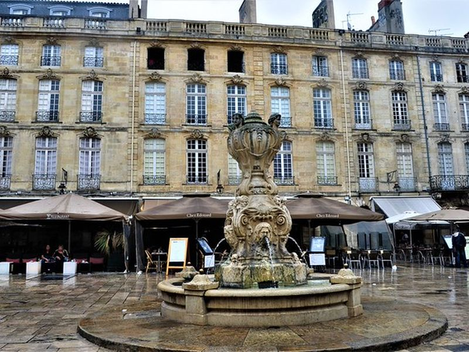
Miroir d'eau
Located in Bordeaux, the Miroir d'eau is a large shallow reflecting pool built in 2006 near Place de la Bourse. Covering an area of 3450 square meters, it is one of the world's largest reflecting pools and offers views of the surrounding architecture. The water's surface acts as a mirror, creating beautiful visual effects and making it a popular spot for photography.
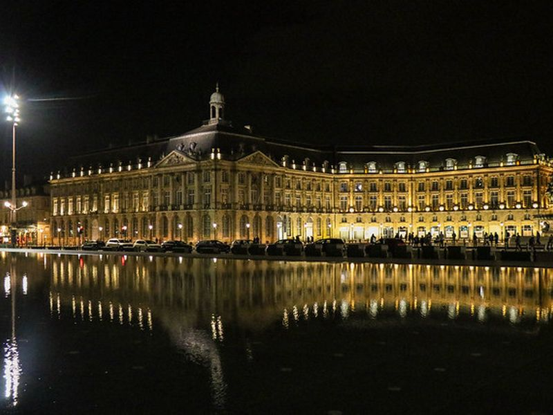
Place du Parlement
Place du Parlement, a historic square in Bordeaux named after the Bordeaux Parliament, is a popular spot for locals and tourists alike. The square is surrounded by bars, restaurants, and cafes with terraced seating. It's located in the Saint-Pierre district and is just a short walk from the Grand Theater. Visitors can explore nearby small streets and squares like Place Saint-Pierre, Place du Palais, and Place Camille-Jullien.
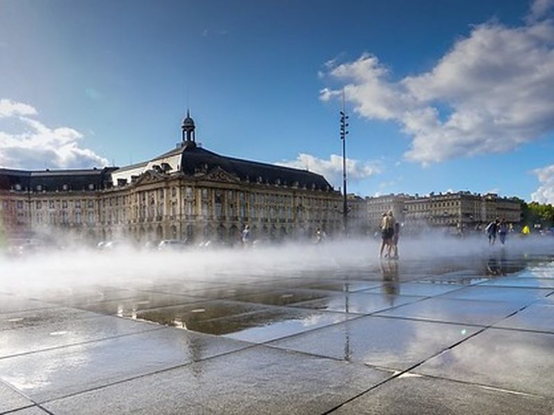
Tour Pey Berland
Nestled in the historic neighborhood of Pey-Berland, the Tour Pey Berland is a 15th-century Gothic bell tower that stands proudly beside the magnificent Cathedrale Saint-Andre. This structure not only serves as a landmark but also offers visitors panoramic views of Bordeaux from its summit.
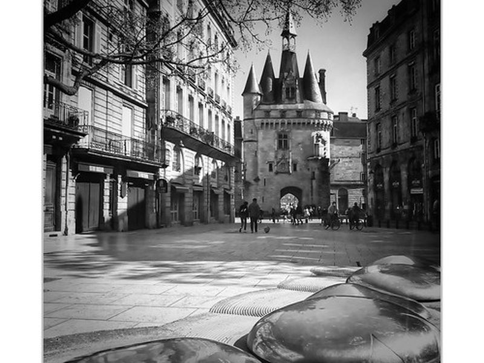
Librairie Mollat
Librairie Mollat is a renowned bookstore in France, established in 1896 by Albert Mollat. It is the largest independent bookstore in the country, offering an extensive collection of books covering art, literature, and science. The store spans over 2,500 square meters and occupies the location of Montesquieu's last house in Bordeaux. Visitors can easily get lost within its labyrinthine rooms filled with a diverse range of titles.
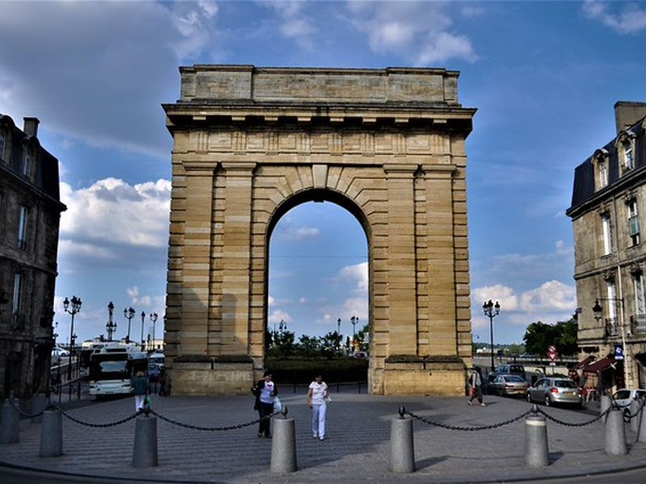
Porte Cailhau
Porte Cailhau, a castle-like gate built in 1495, served as the main entry point to Bordeaux. It functioned as a defensive fortification during conflicts and also welcomed dignitaries and hosted ceremonies due to its Gothic and Renaissance architectural styles. The sculptures on the gate pay homage to King Charles VIII. Originally situated by the river bank, it now stands as a reminder of the city's medieval fortifications.
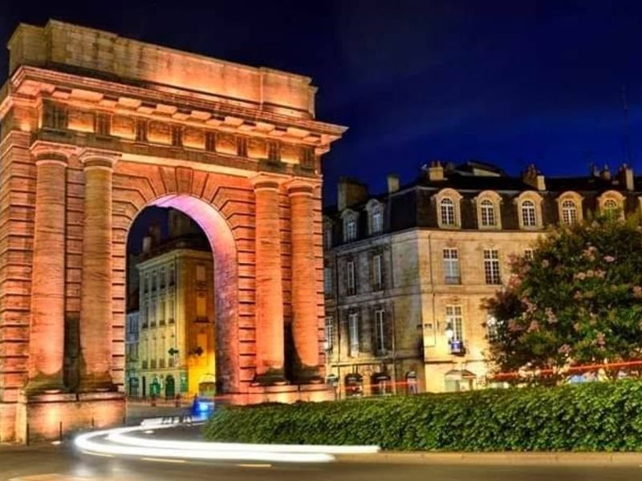
Porte de Bourgogne
Porte de Bourgogne is a landmark Roman-style stone arch that serves as a symbolic gateway to Bordeaux. Built in the 1750s, it stands at Quai Richelieu on the Garonne River, near the Pont de Pierre. This historic structure was once part of the city walls and marked the beginning or end of the road to Paris, now known as Cours Victor Hugo.
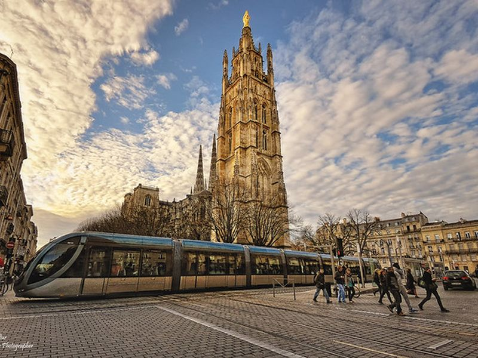
Pont de Pierre
The Pont de Pierre, also known as the Stone Bridge, is an elegant and historic bridge in Bordeaux. Commissioned by Napoleon, it features 17 spans that gracefully cross the River Garonne. This early 19th-century bridge has become a pedestrian-friendly destination since 2017, offering visitors a serene escape from the city center. A leisurely walk across the Pont de Pierre provides skyline views of Bordeaux over the river, especially enchanting after dark.
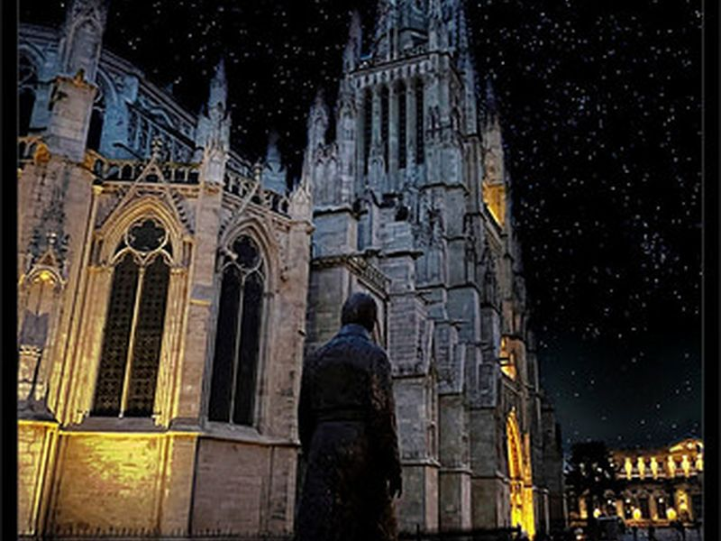
Cité du Vin
Cité du Vin is a cutting-edge wine museum housed in a striking curved aluminum and glass structure in Bordeaux. It offers interactive displays, guided tours, and tastings to educate visitors about the history and production of wine globally. The museum's modern design reflects the swirling motion of both the adjacent Garonne River and wine in a glass. With themed routes and multimedia exhibits, it explores wine's impact on history, geography, culture, and civilization.
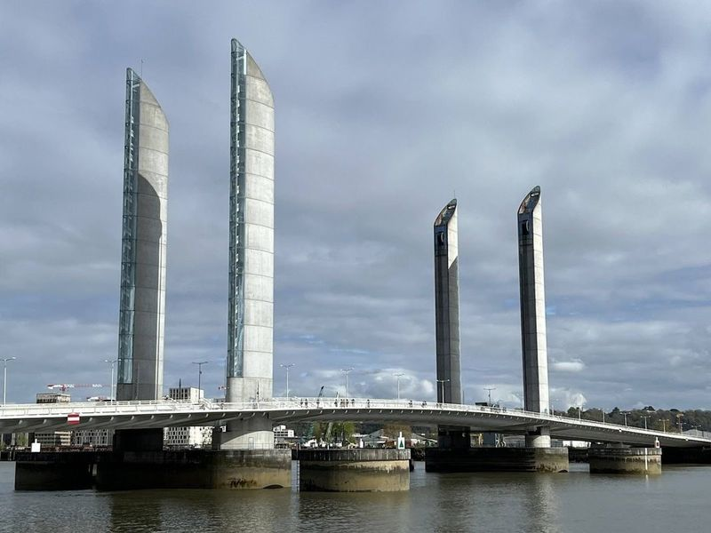
Pont Jacques Chaban Delmas
The Pont Jacques Chaban Delmas is a modern concrete and steel bridge that was opened in 2013. It features a unique design with a deck that remains parallel as it lifts to allow passing ships. The bridge is part of a loop that takes visitors from the historic facades of the 18th century to the most modern facilities in the city, including the City of Wine.
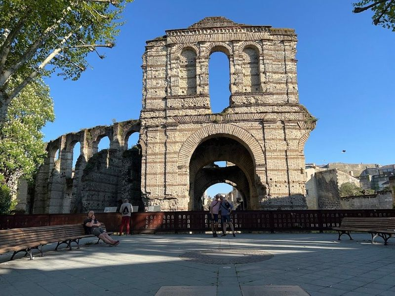
Palais Gallien
The remains of a grand Roman amphitheater, which would have had 20,000 spectators during its heyday, can still be found in Bordeaux. Most of the structure was destroyed in raids and later used for other purposes but parts of it remain today as a historical landmark.
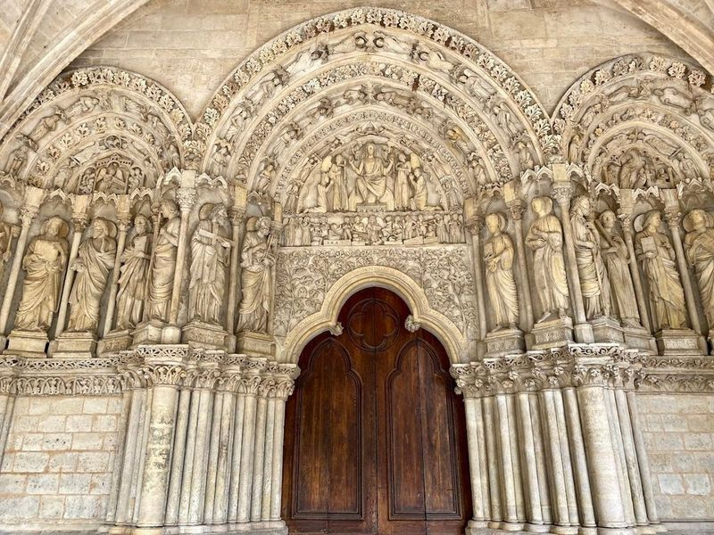
Basilique Saint-Seurin
Basilique Saint-Seurin, a Roman Catholic basilica dating back to the 11th century, is a significant site in Bordeaux's history. It houses a crypt with marble sarcophagi and stands on the grounds of an ancient necropolis from the 4th century. Recognized as part of the UNESCO World Heritage site in the Routes of Santiago de Compostela category, it is considered the birthplace of Christianity in Bordeaux.
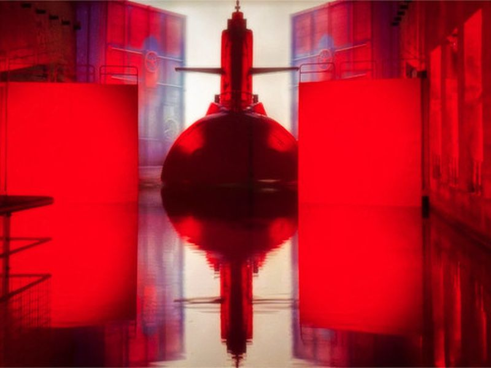
Château Pape Clément
Château Pape Clément is a luxurious wine experience located in Pessac, France. This high-end chateau hotel features ornate quarters and is surrounded by a 60-hectare vineyard where guests can enjoy wine tastings. The property is situated next to a golf course and offers amenities such as onsite massages, an attached winery, complimentary wireless internet access, concierge services, and babysitting for an additional charge. Guests can also indulge in room service during limited hours.
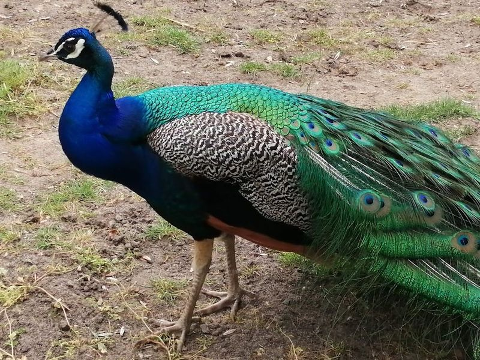
Parc Animalier René Canivenc
Parc Animalier René Canivenc is a picturesque park with lush green meadows, a tranquil stream, and a variety of animals including goats, peacocks, turkeys, and cows. It's an ideal spot for families with kids and dogs as it offers the opportunity to see animals in a zoo-like setting for free. The park features a spacious playground for children and ample space for strolling or jogging even with strollers.
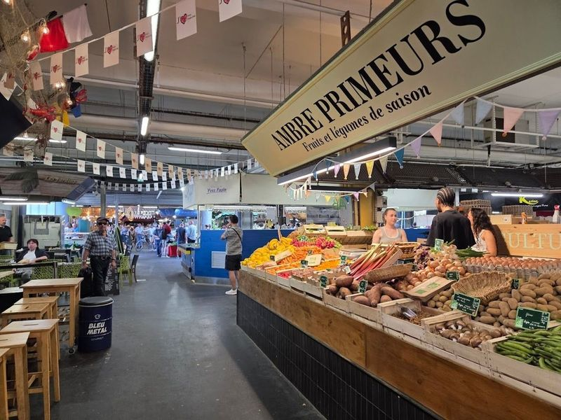
Marché des Capucins
Marché des Capucins, located in Bordeaux, France, is a long-established market known for its local produce, cheese, wine, and prepared foods. This bustling marketplace offers a wide variety of items including fresh baked pastries, locally sourced products, and French delicacies. Visitors can explore the stalls to find an array of options such as freshly sliced cheese and family-produced wines.